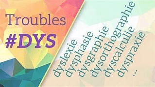

Dyslexie
La dyslexie est un trouble spécifique de la lecture.
Les troubles Dys sont des troubles spécifiques des apprentissages.
La dyslexie : Trouble dont les causes ne sont pas suffisamment éclaircies et qui fait l'objet de nombreuses études et débats. est un trouble courant.
La dyslexie est un trouble spécifique de la lecture.
Cliquer sur une région pour en savoir plus.
| Type de trouble | Symptômes | Solutions |
|---|---|---|
| Dyslexie | Difficulté à lire | Orthophonie |
| Dysorthographie | Problèmes d'orthographe | Exercices spécifiques |
| Dyspraxie | Difficulté de coordination | Ergothérapie |